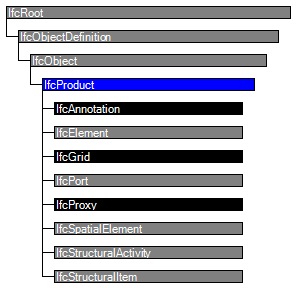

Natural language names
 | Produkt (allgemein) |
 | Product |
 | Produit |
| Produkt (allgemein) |
| Product |
| Produit |
The IfcProduct is an abstract representation of any object that relates to a geometric or spatial context. An IfcProduct occurs at a specific location in space if it has a geometric representation assigned. It can be placed relatively to other products, but ultimately relative to the project coordinate system. The ObjectPlacement attribute establishes the coordinate system in which all points and directions used by the geometric representation items under Representation are founded. The Representation is provided by an IfcProductDefinitionShape being either a geometric shape representation, or a topology representation (with or without underlying geometry of the topological items).
Products include manufactured, supplied or created objects (referred to as elements) for incorporation into an AEC/FM project. This also includes objects that are created indirectly by other products, as spaces are defined by bounding elements. Products can be designated for permanent use or temporary use, an example for the latter is formwork. Products are defined by their properties and representations.
In addition to physical products (covered by the subtype IfcElement) and spatial items (covered by the subtype IfcSpatialElement) the IfcProduct also includes non-physical items, that relate to a geometric or spatial contexts, such as grid, port, annotation, structural actions, etc.
Any instance of IfcProduct defines a particular occurrence of a product, the common type information, that relates to many similar (or identical) occurrences of IfcProduct, is handled by the IfcTypeProduct (and its subtypes), assigned to one or many occurrences of IfcProduct by using the objectified relationship IfcRelDefinesByType. The IfcTypeProduct may provide, in addition to common properties, also a common geometric representation for all occurrences.
NOTE See IfcTypeProduct for how to use a common geometric representation and IfcRelDefinesByType for using and overriding common properties.
On a generic level products can be assigned to processes, controls, resources, project by using the relationship objects that refer to the corresponding object:
EXAMPLE An example of the control relationship is the assignment of a performance history to a distribution element. An example of process assignment relationship is the assignment of products like wall, slab, column to a contruction task for construction planning. And an example of resource assignment relationship is the assignment of products to a construction resource that consumes the product.
HISTORY New entity in IFC1.0
| # | Attribute | Type | Cardinality | Description | C |
|---|---|---|---|---|---|
| 6 | ObjectPlacement | IfcObjectPlacement | [0:1] | Placement of the product in space, the placement can either be absolute (relative to the world coordinate system), relative (relative to the object placement of another product), or constraint (e.g. relative to grid axes). It is determined by the various subtypes of IfcObjectPlacement, which includes the axis placement information to determine the transformation for the object coordinate system. | X |
| 7 | Representation | IfcProductRepresentation | [0:1] | Reference to the representations of the product, being either a representation (IfcProductRepresentation) or as a special case a shape representations (IfcProductDefinitionShape). The product definition shape provides for multiple geometric representations of the shape property of the object within the same object coordinate system, defined by the object placement. | X |
| ReferencedBy | IfcRelAssignsToProduct @RelatingProduct | S[0:?] | Reference to the IfcRelAssignsToProduct relationship, by which other products, processes, controls, resources or actors (as subtypes of IfcObjectDefinition) can be related to this product. | X |
| Rule | Description |
|---|---|
| PlacementForShapeRepresentation | If a Representation is given being an IfcProductDefinitionShape, then also an ObjectPlacement has to be given. The ObjectPlacement defines the object coordinate system in which the geometric representation items of the IfcProductDefinitionShape are founded.
NOTE If the Representation of several subtypes of IfcProduct have the same coordinate system it is permitted to share an instance of IfcObjectPlacement. |

| # | Attribute | Type | Cardinality | Description | C |
|---|---|---|---|---|---|
| IfcRoot | |||||
| 1 | GlobalId | IfcGloballyUniqueId | [1:1] | Assignment of a globally unique identifier within the entire software world. | X |
| 2 | OwnerHistory | IfcOwnerHistory | [0:1] |
Assignment of the information about the current ownership of that object, including owning actor, application, local identification and information captured about the recent changes of the object,
NOTE only the last modification in stored - either as addition, deletion or modification. | X |
| 3 | Name | IfcLabel | [0:1] | Optional name for use by the participating software systems or users. For some subtypes of IfcRoot the insertion of the Name attribute may be required. This would be enforced by a where rule. | X |
| 4 | Description | IfcText | [0:1] | Optional description, provided for exchanging informative comments. | X |
| IfcObjectDefinition | |||||
| HasAssignments | IfcRelAssigns @RelatedObjects | S[0:?] | Reference to the relationship objects, that assign (by an association relationship) other subtypes of IfcObject to this object instance. Examples are the association to products, processes, controls, resources or groups. | X | |
| Nests | IfcRelNests @RelatedObjects | S[0:1] | References to the decomposition relationship being a nesting. It determines that this object definition is a part within an ordered whole/part decomposition relationship. An object occurrence or type can only be part of a single decomposition (to allow hierarchical strutures only). | X | |
| IsNestedBy | IfcRelNests @RelatingObject | S[0:?] | References to the decomposition relationship being a nesting. It determines that this object definition is the whole within an ordered whole/part decomposition relationship. An object or object type can be nested by several other objects (occurrences or types). | X | |
| HasContext | IfcRelDeclares @RelatedDefinitions | S[0:1] | References to the context providing context information such as project unit or representation context. It should only be asserted for the uppermost non-spatial object. | X | |
| IsDecomposedBy | IfcRelAggregates @RelatingObject | S[0:?] | References to the decomposition relationship being an aggregation. It determines that this object definition is whole within an unordered whole/part decomposition relationship. An object definitions can be aggregated by several other objects (occurrences or parts). | X | |
| Decomposes | IfcRelAggregates @RelatedObjects | S[0:1] | References to the decomposition relationship being an aggregation. It determines that this object definition is a part within an unordered whole/part decomposition relationship. An object definitions can only be part of a single decomposition (to allow hierarchical strutures only). | X | |
| HasAssociations | IfcRelAssociates @RelatedObjects | S[0:?] | Reference to the relationship objects, that associates external references or other resource definitions to the object.. Examples are the association to library, documentation or classification. | X | |
| IfcObject | |||||
| 5 | ObjectType | IfcLabel | [0:1] |
The type denotes a particular type that indicates the object further. The use has to be established at the level of instantiable subtypes. In particular it holds the user defined type, if the enumeration of the attribute PredefinedType is set to USERDEFINED.
| X |
| IsDeclaredBy | IfcRelDefinesByObject @RelatedObjects | S[0:1] | Link to the relationship object pointing to the declaring object that provides the object definitions for this object occurrence. The declaring object has to be part of an object type decomposition. The associated IfcObject, or its subtypes, contains the specific information (as part of a type, or style, definition), that is common to all reflected instances of the declaring IfcObject, or its subtypes. | X | |
| Declares | IfcRelDefinesByObject @RelatingObject | S[0:?] | Link to the relationship object pointing to the reflected object(s) that receives the object definitions. The reflected object has to be part of an object occurrence decomposition. The associated IfcObject, or its subtypes, provides the specific information (as part of a type, or style, definition), that is common to all reflected instances of the declaring IfcObject, or its subtypes. | X | |
| IsTypedBy | IfcRelDefinesByType @RelatedObjects | S[0:1] | Set of relationships to the object type that provides the type definitions for this object occurrence. The then associated IfcTypeObject, or its subtypes, contains the specific information (or type, or style), that is common to all instances of IfcObject, or its subtypes, referring to the same type. | X | |
| IsDefinedBy | IfcRelDefinesByProperties @RelatedObjects | S[0:?] | Set of relationships to property set definitions attached to this object. Those statically or dynamically defined properties contain alphanumeric information content that further defines the object. | X | |
| IfcProduct | |||||
| 6 | ObjectPlacement | IfcObjectPlacement | [0:1] | Placement of the product in space, the placement can either be absolute (relative to the world coordinate system), relative (relative to the object placement of another product), or constraint (e.g. relative to grid axes). It is determined by the various subtypes of IfcObjectPlacement, which includes the axis placement information to determine the transformation for the object coordinate system. | X |
| 7 | Representation | IfcProductRepresentation | [0:1] | Reference to the representations of the product, being either a representation (IfcProductRepresentation) or as a special case a shape representations (IfcProductDefinitionShape). The product definition shape provides for multiple geometric representations of the shape property of the object within the same object coordinate system, defined by the object placement. | X |
| ReferencedBy | IfcRelAssignsToProduct @RelatingProduct | S[0:?] | Reference to the IfcRelAssignsToProduct relationship, by which other products, processes, controls, resources or actors (as subtypes of IfcObjectDefinition) can be related to this product. | X | |
| # | Concept | Model View |
|---|---|---|
| IfcRoot | ||
| Software Identity | Common Use Definitions | |
| Revision Control | Common Use Definitions | |
| IfcObject | ||
| Object Occurrence Predefined Type | Common Use Definitions | |
<xs:element name="IfcProduct" type="ifc:IfcProduct" abstract="true" substitutionGroup="ifc:IfcObject" nillable="true"/>
<xs:complexType name="IfcProduct" abstract="true">
<xs:complexContent>
<xs:extension base="ifc:IfcObject">
<xs:sequence>
<xs:element name="ObjectPlacement" type="ifc:IfcObjectPlacement" nillable="true" minOccurs="0"/>
<xs:element name="Representation" type="ifc:IfcProductRepresentation" nillable="true" minOccurs="0"/>
</xs:sequence>
</xs:extension>
</xs:complexContent>
</xs:complexType>
ENTITY IfcProduct
ABSTRACT SUPERTYPE OF(ONEOF(IfcAnnotation, IfcElement, IfcGrid, IfcPort, IfcProxy, IfcSpatialElement, IfcStructuralActivity, IfcStructuralItem))
SUBTYPE OF (IfcObject);
ObjectPlacement : OPTIONAL IfcObjectPlacement;
Representation : OPTIONAL IfcProductRepresentation;
INVERSE
ReferencedBy : SET OF IfcRelAssignsToProduct FOR RelatingProduct;
WHERE
PlacementForShapeRepresentation : (EXISTS(Representation) AND EXISTS(ObjectPlacement))
OR (EXISTS(Representation) AND
(SIZEOF(QUERY(temp <* Representation.Representations | 'IFCREPRESENTATIONRESOURCE.IFCSHAPEREPRESENTATION' IN TYPEOF(temp))) = 0))
OR (NOT(EXISTS(Representation)));
END_ENTITY;
 EXPRESS-G diagram
EXPRESS-G diagram Link to this page
Link to this page